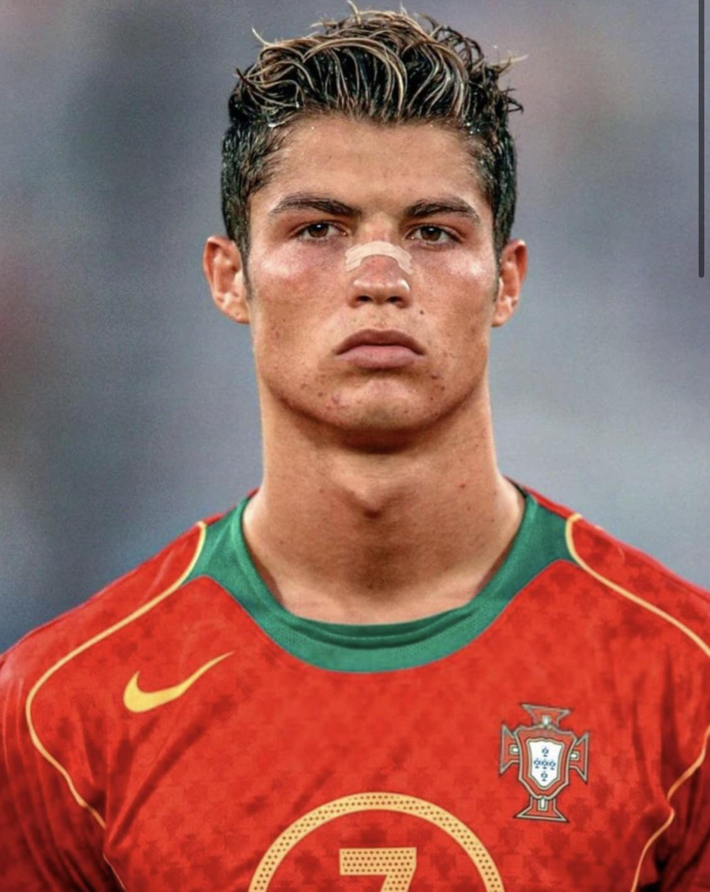

Cristiano Ronaldo dos Santos Aveiro wurde am 5. Februar 1985 in Funchal auf der Insel Madeira geboren. Er wuchs in bescheidenen Verhältnissen auf. Sein Vater war Platzwart bei einem Fussballverein, seine Mutter arbeitete als Köchin. Schon früh zeigte Ronaldo eine grosse Leidenschaft für den Fussball und trainierte oft stundenlang auf der Strasse oder mit Freunden auf staubigen Plätzen.
Im Alter von acht Jahren begann er beim kleinen Verein Andorinha zu spielen, wo sein Vater half. Rasch wurde deutlich, dass Ronaldo aussergewöhnliches Talent besass. Mit zehn Jahren wechselte er zu Nacional Madeira, einem grösseren Klub auf der Insel. Schon kurze Zeit später war klar: Dieses Kind ist etwas Besonderes.
Im Alter von zwölf Jahren wagte Ronaldo einen mutigen Schritt – er zog alleine in die Hauptstadt Lissabon, um in die Jugendakademie von Sporting Lissabon aufgenommen zu werden. Der Abschied von seiner Familie war schwer, und in Lissabon wurde er wegen seines Akzents und seiner Herkunft oft gehänselt. Doch Ronaldo liess sich nicht unterkriegen.
Er trainierte hart, stärker und schneller als alle anderen. Mit nur 16 Jahren spielte er bereits für die erste Mannschaft von Sporting. Bei einem Testspiel gegen Manchester United beeindruckte er Trainer Alex Ferguson so sehr, dass dieser ihn sofort verpflichten wollte. Damit begann Ronaldos Aufstieg zur Weltkarriere.
